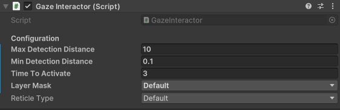
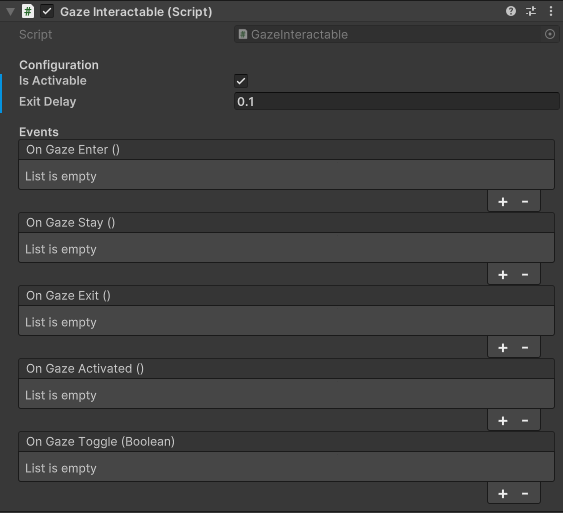

Unity Gaze Interaction System (UGIS)
Core Components
The system is built on two main components:
- GazeInteractor: Component attached to the Main Camera that sends out rays to detect GazeInteractables.
- GazeInteractable: Component attached to objects in the scene for the user to interact with.
When the Gaze Interactor detects a Gaze Interactable, it triggers interaction events.
Setup
How to setup the GazeInteractor
- In the Hierarchy window, create an empty GameObject as a child of your Main Camera.
- Add the GazeInteractor component to this new GameObject.

How to setup GazeInteractables
- Attach the GazeInteractable component to any object in your scene that you want users to interact with via gaze.
- In the Inspector Window, use the interaction events to specify what happens when the user looks at the object.

Customization
The basic setup allows users to interact with objects simply by looking at them. Both the GazeInteractor and GazeInteractable Components have options you can use to customize their behavior.
How to customize the GazeInteractor

- Max Detection Distance: This property defines the maximum distance from the camera at which the GazeInteractor can detect Gaze Interactable objects. Users looking at objects beyond this distance will not trigger interaction.
- Min Detection Distance: This property defines the minimum distance from the camera at which the GazeInteractor can detect Gaze Interactable objects. Users looking at objects closer than this distance will not trigger interaction.
- Time To Activate: This property sets the dwell time required for the Gaze Interaction System to register a successful activation. Users must look at a Gaze Interactable object for this duration (in seconds) before it triggers the On Gaze Activated event.
- Layer Mask: This property defines a layer mask that restricts which objects in the scene the GazeInteractor's raycast can collide with. Only objects included in the selected layers will be considered Gaze Interactables.
- Reticle Type: This property determines the type of reticle (visual feedback) displayed to indicate where the user is looking. The available options are defined by the ReticleType enumeration within the code.
How to customize the GazeInteractables

- Is Activable: This property determines whether the GazeInteractable object can be activated through gaze interaction. If set to false, users looking at the object will not trigger the On Gaze Activated event.
- Exit Delay: This property defines a time delay (in seconds) before the On Gaze Exit event is triggered after the user's gaze moves away from the GazeInteractable object. This allows for a smoother user experience when transitioning focus between objects.
- On Gaze Enter: This UnityEvent is triggered when the user's gaze initially focuses on a GazeInteractable object. You can use this event to perform actions like highlighting the object or playing a sound effect.
- On Gaze Stay: This UnityEvent is triggered repeatedly while the user's gaze remains focused on a GazeInteractable object. This is typically used for actions that require sustained focus, such as charging up an attack.
- On Gaze Exit: This UnityEvent is triggered after the user's gaze moves away from a GazeInteractable object, following the delay defined by _exitDelay. You can use this event to reset the object's state or perform cleanup actions.
- On Gaze Activated: This UnityEvent is triggered when the user's gaze remains focused on a GazeInteractable object for the duration specified by
Time To Activate(dwell time) and the object is set to be activable (Is Activableis true). This is the core interaction event for the system.
Helpful links
- For a more in-depth explanation, check out this video.
- Explore the API Reference for more details.
- Modify the source code available on GitHub.
- Install directly from the Unity Asset Store.
- Get in touch with me at tomazsaraiva.com.